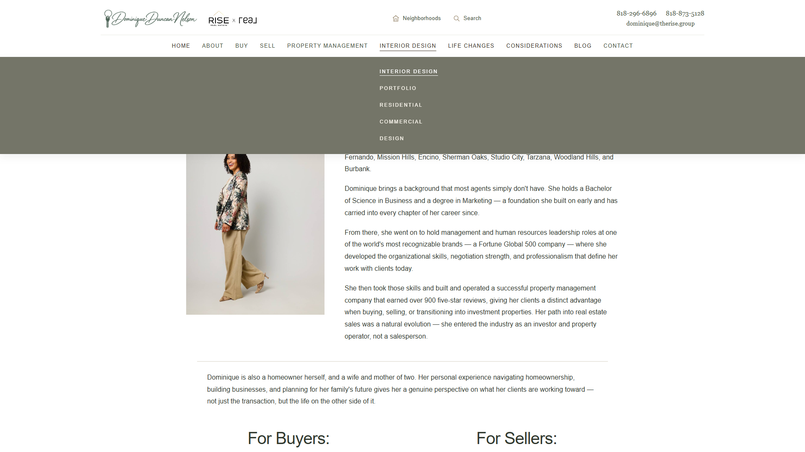
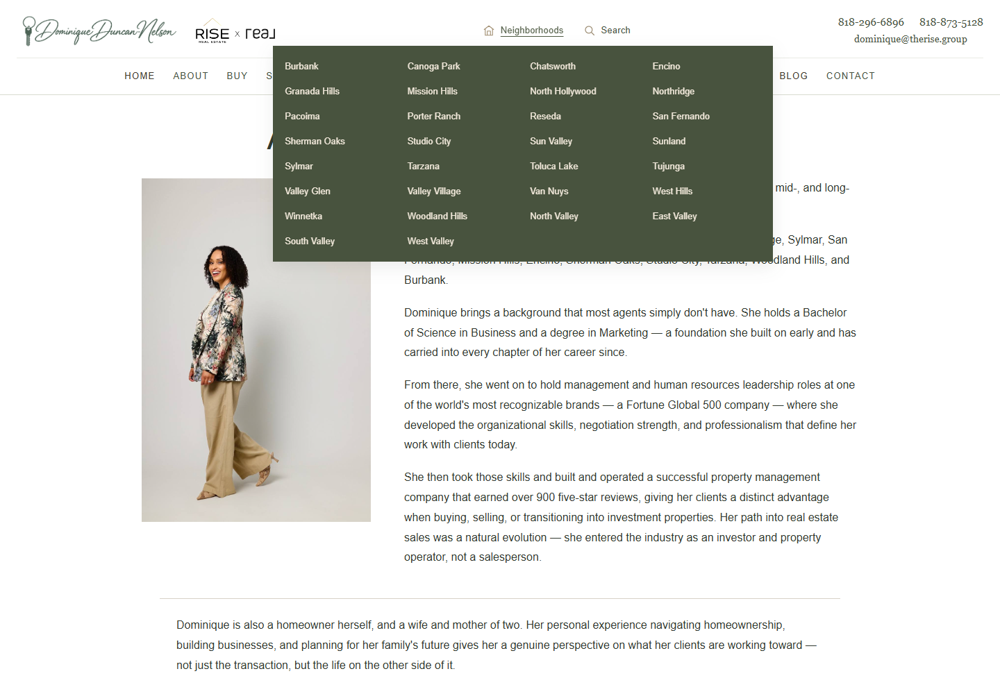
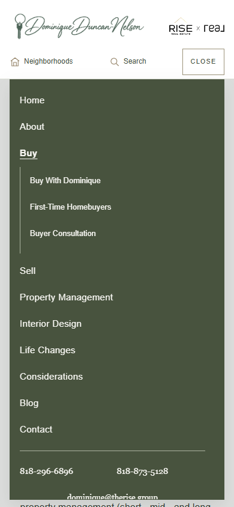
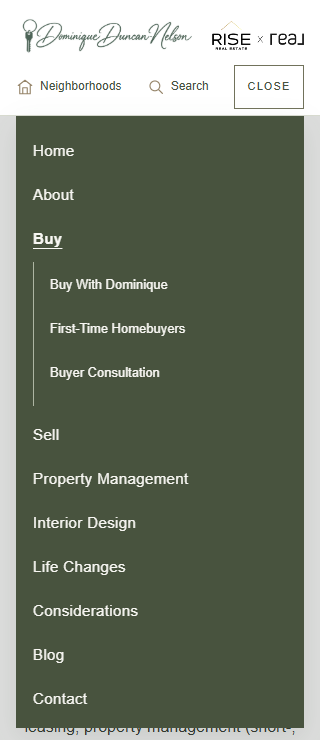

DommyDom navigation review
Full-width primary dropdowns with ivory uppercase links and a restrained underline. Neighborhoods preserves its sage city grid. Search remains a direct link. Desktop hover and tablet touch checks passed at seven widths, including the open phone menu. All existing navigation destinations are preserved. Local preview only.
1920 group 3
1440 group 01440 neighborhoods
1024 group 1768 group 0390 menu
320 menu